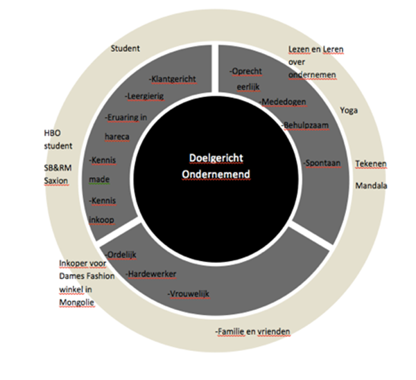

De merktemplate is een handig hulpmiddel om in kaart te brengen waar je voor staat. Een merktemplate is een cirkel die is opgebouwd uit drie ringen. De binnenste ring is die van de merkessentie, de belangrijkste waarde waar een merk voor staat. De tweede ring wordt gevormd door de merkwaarden: functionele, emotionele en expressieve waarden. In de buitenste ring staan de bewijsstukken voor de merkwaarden.
Ik wil graag ondernemer worden en een eigen zaak runnen. Deze droom heb mij als doel gesteld. Daarom heb ik SB&RM opleiding gekozen. Na mijn opleiding ga ik een eigen zaak runnen in de dames mode.
Door het werken in de horeca en lopen van stage in warenhuizen heb ik ervaring opgebouwd in die branches. Hierdoor heb ik geleerd om klantvriendelijk te zijn met de klanten. Mijn andere belangrijke kenmerk is leergierig. Ik ben altijd leergierig geweest vanaf jonge leeftijd. In Mongolië en ook in Nederland. Daardoor ben ik zover gekomen in Nederland, om zelfs een HBO opleiding te volgen.
Ik ben boeddhistisch opgevoed en zelf ook boeddhist. De emotionele persoonskenmerken heb ik van mijn cultuur en religie overgenomen.
Ik hou van ordelijk zijn en verdeel ruim van te voren in wat ik wil doen de komende tijd. Ik werk ook heel hard om mijn doelen te bereiken.
Mijn activiteiten zijn: